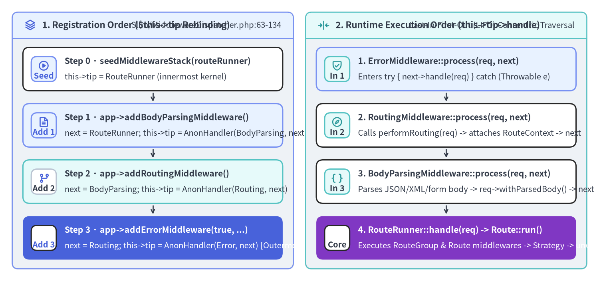
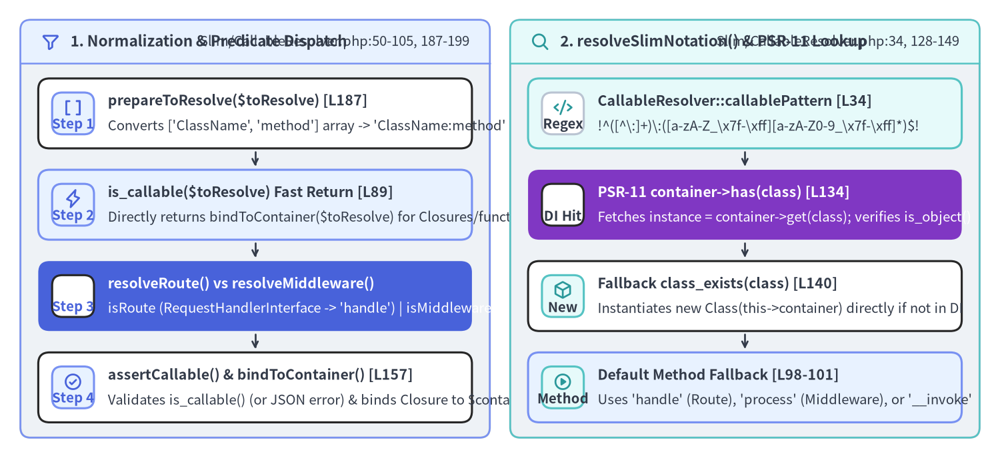

MiddlewareDispatcher LIFO Onion & CallableResolver Internals
At the heart of Slim 4's PSR-15 request execution model sit two tightly cooperating classes: Slim\MiddlewareDispatcher (Slim/MiddlewareDispatcher.php, 290 lines / 177 LOC) and Slim\CallableResolver (Slim/CallableResolver.php, 201 lines / 131 LOC). Together, they transform heterogeneous middleware registrations (MiddlewareInterface instances, Closure callbacks, 'Class:method' strings, and PSR-11 container service IDs) into a unified concentric chain of RequestHandlerInterface objects.

Source Code
from drawlib.canvas import save, setup
from drawlib.icons import phosphor
from drawlib.smartarts import CardList, Panel
from drawlib.styles import Colors, Styles
setup(width=196, height=92, dpi=150)
# Left Panel: Construction Order (LIFO Stack Growth)
p_left = Panel(
"1. Registration Order ($this->tip Rebinding)",
"Slim/MiddlewareDispatcher.php:63-134",
style=Styles.Neutral.patch(shape_r=2.0),
header_style=Styles.PrimaryNeutral.patch(shape_line_width=1.2),
text_style=Styles.DarkBold.patch(text_size=10.8),
description_style=Styles.Dark.patch(text_size=9.8),
icon=phosphor.stack,
icon_style=Styles.PrimaryBold,
header_variant="filled",
header_height=8.5,
)
p_left.draw((4.0, 4.0), width=92.0, height=84.0)
lx, lw, lh = p_left.get_content_box((4.0, 4.0), width=92.0, height=84.0, padding=(3.5, 3.0))
reg_steps = CardList(
style=Styles.White,
text_style=Styles.DarkBold.patch(text_size=10.2),
description_style=Styles.Dark.patch(text_size=9.8),
badge_shape="rounded_rect",
badge_style=Styles.PrimaryNeutral,
badge_text_style=Styles.PrimaryBold.patch(text_size=9.8),
icon_style=Styles.PrimaryBold,
direction="vertical",
spacing=2.6,
show_arrows=True,
arrow_style=Styles.DarkBold.patch(line_arrow_head_scale=10, line_width=1.3),
)
reg_steps.add(
"Step 0 · seedMiddlewareStack(routeRunner)",
"this->tip = RouteRunner (innermost kernel)",
badge_text="Seed",
icon=phosphor.play_circle,
)
reg_steps.add(
"Step 1 · app->addBodyParsingMiddleware()",
"next = RouteRunner; this->tip = AnonHandler(BodyParsing, next)",
badge_text="Add 1",
icon=phosphor.file_text,
style=Styles.PrimaryNeutral,
)
reg_steps.add(
"Step 2 · app->addRoutingMiddleware()",
"next = BodyParsing; this->tip = AnonHandler(Routing, next)",
badge_text="Add 2",
icon=phosphor.git_branch,
style=Styles.SecondaryNeutral,
badge_style=Styles.White.patch(shape_line_color=Colors.Gray4),
badge_text_style=Styles.DarkBold.patch(text_size=9.8),
)
reg_steps.add(
"Step 3 · app->addErrorMiddleware(true, ...)",
"next = Routing; this->tip = AnonHandler(Error, next) [Outermost]",
badge_text="Add 3",
icon=phosphor.shield_warning,
style=Styles.PrimaryFlat,
text_style=Styles.WhiteBold.patch(text_size=10.2),
description_style=Styles.White.patch(text_size=9.8),
badge_style=Styles.White,
badge_text_style=Styles.PrimaryBold.patch(text_size=9.8),
icon_style=Styles.WhiteBold,
)
reg_steps.draw(xy=lx, width=lw, height=lh)
# Right Panel: Runtime Traversal Order (Inward Request -> Outward Response)
p_right = Panel(
"2. Runtime Execution Order (this->tip->handle)",
"Last-In-First-Out (LIFO) Concentric Traversal",
style=Styles.Neutral.patch(shape_r=2.0),
header_style=Styles.SecondaryNeutral.patch(shape_line_width=1.2),
text_style=Styles.DarkBold.patch(text_size=10.8),
description_style=Styles.Dark.patch(text_size=9.8),
icon=phosphor.arrows_in_line_horizontal,
icon_style=Styles.SecondaryBold,
header_variant="filled",
header_height=8.5,
)
p_right.draw((100.0, 4.0), width=92.0, height=84.0)
rx, rw, rh = p_right.get_content_box((100.0, 4.0), width=92.0, height=84.0, padding=(3.5, 3.0))
run_steps = CardList(
style=Styles.White,
text_style=Styles.DarkBold.patch(text_size=10.2),
description_style=Styles.Dark.patch(text_size=9.8),
badge_shape="rounded_rect",
badge_style=Styles.SecondaryNeutral,
badge_text_style=Styles.DarkBold.patch(text_size=9.8),
icon_style=Styles.SecondaryBold,
direction="vertical",
spacing=2.6,
show_arrows=True,
arrow_style=Styles.DarkBold.patch(line_arrow_head_scale=10, line_width=1.3),
)
run_steps.add(
"1. ErrorMiddleware::process(req, next)",
"Enters try { next->handle(req) } catch (Throwable e)",
badge_text="In 1",
icon=phosphor.shield_check,
style=Styles.PrimaryNeutral,
)
run_steps.add(
"2. RoutingMiddleware::process(req, next)",
"Calls performRouting(req) -> attaches RouteContext -> next",
badge_text="In 2",
icon=phosphor.compass,
)
run_steps.add(
"3. BodyParsingMiddleware::process(req, next)",
"Parses JSON/XML/form body -> req->withParsedBody() -> next",
badge_text="In 3",
icon=phosphor.brackets_curly,
)
run_steps.add(
"4. RouteRunner::handle(req) -> Route::run()",
"Executes RouteGroup & Route middlewares -> Strategy -> unwinds",
badge_text="Core",
icon=phosphor.lightning,
style=Styles.AccentFlat,
text_style=Styles.WhiteBold.patch(text_size=10.2),
description_style=Styles.White.patch(text_size=9.8),
badge_style=Styles.White,
badge_text_style=Styles.DarkBold.patch(text_size=9.8),
icon_style=Styles.WhiteBold,
)
run_steps.draw(xy=rx, width=rw, height=lh)
save()
1. How MiddlewareDispatcher Builds the LIFO Onion
Unlike array-based middleware runners that maintain a mutable cursor index per request, Slim\MiddlewareDispatcher (Slim/MiddlewareDispatcher.php:35-289) stores a single pointer—protected RequestHandlerInterface $tip; (line 40)—and builds an immutable linked list of anonymous RequestHandlerInterface objects as middlewares are added.
Seeding the Kernel (Slim/MiddlewareDispatcher.php:50-74)
When MiddlewareDispatcher is constructed, seedMiddlewareStack(RequestHandlerInterface $kernel) sets $this->tip = $kernel:
- At the application level (
Slim/App.php:74),$kernelis theRouteRunnerinstance. - At the route level (
Slim/Routing/Route.php:140),$kernelis theRouteinstance itself (which implementsRequestHandlerInterface).
// Slim/MiddlewareDispatcher.php:63-74
public function seedMiddlewareStack(RequestHandlerInterface $kernel): void
{
$this->tip = $kernel;
}
public function handle(ServerRequestInterface $request): ResponseInterface
{
return $this->tip->handle($request);
}
Polymorphic Dispatch in add($middleware) (Slim/MiddlewareDispatcher.php:85-104)
When user code calls $app->add($middleware), MiddlewareDispatcher::add() inspects the runtime type of $middleware and branches into one of three specialized wrappers:
Branch in add() |
Condition (Slim/MiddlewareDispatcher.php) |
Target Method | Anonymous RequestHandlerInterface Behavior |
|---|---|---|---|
| 1. PSR-15 Instance | $middleware instanceof MiddlewareInterface (line 87) |
addMiddleware() (lines 113–134) |
Captures ($middleware, $next) and calls $this->middleware->process($request, $this->next) |
| 2. Deferred String | is_string($middleware) (line 91) |
addDeferred() (lines 144–244) |
Defers container lookup and instantiation until handle($request) executes at request time |
| 3. PHP Callable | is_callable($middleware) (line 95) |
addCallable() (lines 254–288) |
Binds Closure to $this->container (if present) and calls ($this->middleware)($request, $this->next) |
Let's inspect addMiddleware() (Slim/MiddlewareDispatcher.php:113-134) to see how each call wraps $this->tip:
public function addMiddleware(MiddlewareInterface $middleware): MiddlewareDispatcherInterface
{
$next = $this->tip;
$this->tip = new class ($middleware, $next) implements RequestHandlerInterface {
private MiddlewareInterface $middleware;
private RequestHandlerInterface $next;
public function __construct(MiddlewareInterface $middleware, RequestHandlerInterface $next)
{
$this->middleware = $middleware;
$this->next = $next;
}
public function handle(ServerRequestInterface $request): ResponseInterface
{
return $this->middleware->process($request, $this->next);
}
};
return $this;
}
Because $next = $this->tip captures the previous tip and $this->tip is overwritten with the new anonymous RequestHandlerInterface wrapper, middlewares execute in Last-In-First-Out (LIFO) order:
- The first middleware added wraps
RouteRunnerdirectly and runs closest to the route handler. - The last middleware added becomes the final
$this->tipand runs first on every incoming request (which is why$app->addErrorMiddleware(...)should always be registered last).
2. Why MiddlewareDispatcher::addDeferred() Has Cognitive Complexity 26
In the PNI501 static AST audit of Slim v4.15.3, MiddlewareDispatcher::addDeferred() (Slim/MiddlewareDispatcher.php:144-244) is the single highest-complexity method in the entire repository (cognitive complexity = 26 across 101 lines). Why is it so complex?
// Slim/MiddlewareDispatcher.php:173-240 (inside addDeferred's anonymous RequestHandlerInterface)
public function handle(ServerRequestInterface $request): ResponseInterface
{
if ($this->callableResolver instanceof AdvancedCallableResolverInterface) {
$callable = $this->callableResolver->resolveMiddleware($this->middleware);
/** @var ResponseInterface */
return $callable($request, $this->next);
}
$callable = null;
if ($this->callableResolver instanceof CallableResolverInterface) {
try {
$callable = $this->callableResolver->resolve($this->middleware);
} catch (RuntimeException $e) {
// Do Nothing
}
}
if (!$callable) {
$resolved = $this->middleware;
$instance = null;
$method = null;
if (preg_match(CallableResolver::$callablePattern, $resolved, $matches)) {
$resolved = $matches[1];
$method = $matches[2];
}
if ($this->container && $this->container->has($resolved)) {
$instance = $this->container->get($resolved);
if ($instance instanceof MiddlewareInterface) {
return $instance->process($request, $this->next);
}
} elseif (!function_exists($resolved)) {
if (!class_exists($resolved)) {
throw new RuntimeException(sprintf('Middleware %s does not exist', $resolved));
}
$instance = new $resolved($this->container);
}
if ($instance && $instance instanceof MiddlewareInterface) {
return $instance->process($request, $this->next);
}
// ... binds [$instance, $method] and Closure::bindTo($this->container)
}
Dissecting the Two Paths in addDeferred()
- The Fast Path (
AdvancedCallableResolverInterface, lines 175–179): In 99.9% of Slim 4 applications,$this->callableResolveris Slim's built-inSlim\CallableResolver, which implementsAdvancedCallableResolverInterface. On line 175,addDeferred()immediately delegates to$this->callableResolver->resolveMiddleware($this->middleware)and invokes$callable($request, $this->next)in 5 lines of code. - The Legacy Backward-Compatibility Fallback (lines 181–239):
In Slim
4.0.0,CallableResolverInterfaceonly hadresolve($toResolve): callable, which defaulted objects to'__invoke'rather than'process'(MiddlewareInterface::process). Therefore, if a user registered a PSR-15MiddlewareInterfaceclass string (which hasprocess(), not__invoke()),CallableResolverInterface::resolve()threw aRuntimeException! To avoid breaking custom third-partyCallableResolverInterfaceimplementations whenAdvancedCallableResolverInterfacewas introduced later in the4.xseries,addDeferred()retains lines 181–239: it catches and ignoresRuntimeExceptionfromresolve()(line 186) and manually re-implements regex splitting,$container->has()lookup,instanceof MiddlewareInterfacechecks, andnew $resolved($this->container).
3. CallableResolver & $callablePattern Internals
Slim\CallableResolver (Slim/CallableResolver.php:32-200) is the final class responsible for translating route handlers, group callbacks, middleware strings, and error renderers into valid PHP callables.

Source Code
from drawlib.canvas import save, setup
from drawlib.icons import phosphor
from drawlib.smartarts import CardList, Panel
from drawlib.styles import Colors, Styles
setup(width=196, height=90, dpi=150)
# Left Panel: Input Normalization & Predicate Dispatch
p_left = Panel(
"1. Normalization & Predicate Dispatch",
"Slim/CallableResolver.php:50-105, 187-199",
style=Styles.Neutral.patch(shape_r=2.0),
header_style=Styles.PrimaryNeutral.patch(shape_line_width=1.2),
text_style=Styles.DarkBold.patch(text_size=10.8),
description_style=Styles.Dark.patch(text_size=9.8),
icon=phosphor.funnel,
icon_style=Styles.PrimaryBold,
header_variant="filled",
header_height=8.5,
)
p_left.draw((4.0, 4.0), width=92.0, height=82.0)
lx, lw, lh = p_left.get_content_box((4.0, 4.0), width=92.0, height=82.0, padding=(3.5, 3.0))
pred_list = CardList(
style=Styles.White,
text_style=Styles.DarkBold.patch(text_size=10.2),
description_style=Styles.Dark.patch(text_size=9.8),
badge_shape="rounded_rect",
badge_style=Styles.PrimaryNeutral,
badge_text_style=Styles.PrimaryBold.patch(text_size=9.8),
icon_style=Styles.PrimaryBold,
direction="vertical",
spacing=2.6,
show_arrows=True,
arrow_style=Styles.DarkBold.patch(line_arrow_head_scale=10, line_width=1.3),
)
pred_list.add(
"prepareToResolve($toResolve) [L187]",
"Converts ['ClassName', 'method'] array -> 'ClassName:method'",
badge_text="Step 1",
icon=phosphor.brackets_square,
)
pred_list.add(
"is_callable($toResolve) Fast Return [L89]",
"Directly returns bindToContainer($toResolve) for Closures/functions",
badge_text="Step 2",
icon=phosphor.lightning,
style=Styles.PrimaryNeutral,
)
pred_list.add(
"resolveRoute() vs resolveMiddleware()",
"isRoute (RequestHandlerInterface -> 'handle') | isMiddleware ('process')",
badge_text="Step 3",
icon=phosphor.git_fork,
style=Styles.PrimaryFlat,
text_style=Styles.WhiteBold.patch(text_size=10.2),
description_style=Styles.White.patch(text_size=9.8),
badge_style=Styles.White,
badge_text_style=Styles.PrimaryBold.patch(text_size=9.8),
icon_style=Styles.WhiteBold,
)
pred_list.add(
"assertCallable() & bindToContainer() [L157]",
"Validates is_callable() (or JSON error) & binds Closure to $container",
badge_text="Step 4",
icon=phosphor.check_circle,
)
pred_list.draw(xy=lx, width=lw, height=lh)
# Right Panel: resolveSlimNotation() Regex & Container Lookup
p_right = Panel(
"2. resolveSlimNotation() & PSR-11 Lookup",
"Slim/CallableResolver.php:34, 128-149",
style=Styles.Neutral.patch(shape_r=2.0),
header_style=Styles.SecondaryNeutral.patch(shape_line_width=1.2),
text_style=Styles.DarkBold.patch(text_size=10.8),
description_style=Styles.Dark.patch(text_size=9.8),
icon=phosphor.magnifying_glass,
icon_style=Styles.SecondaryBold,
header_variant="filled",
header_height=8.5,
)
p_right.draw((100.0, 4.0), width=92.0, height=82.0)
rx, rw, rh = p_right.get_content_box((100.0, 4.0), width=92.0, height=82.0, padding=(3.5, 3.0))
slim_list = CardList(
style=Styles.White,
text_style=Styles.DarkBold.patch(text_size=10.2),
description_style=Styles.Dark.patch(text_size=9.8),
badge_shape="rounded_rect",
badge_style=Styles.SecondaryNeutral,
badge_text_style=Styles.DarkBold.patch(text_size=9.8),
icon_style=Styles.SecondaryBold,
direction="vertical",
spacing=2.6,
show_arrows=True,
arrow_style=Styles.DarkBold.patch(line_arrow_head_scale=10, line_width=1.3),
)
slim_list.add(
"CallableResolver::callablePattern [L34]",
"!^([^\\:]+)\\:([a-zA-Z_\\x7f-\\xff][a-zA-Z0-9_\\x7f-\\xff]*)$!",
badge_text="Regex",
icon=phosphor.code,
style=Styles.SecondaryNeutral,
badge_style=Styles.White.patch(shape_line_color=Colors.Gray4),
badge_text_style=Styles.DarkBold.patch(text_size=9.8),
)
slim_list.add(
"PSR-11 container->has(class) [L134]",
"Fetches instance = container->get(class); verifies is_object()",
badge_text="DI Hit",
icon=phosphor.database,
style=Styles.AccentFlat,
text_style=Styles.WhiteBold.patch(text_size=10.2),
description_style=Styles.White.patch(text_size=9.8),
badge_style=Styles.White,
badge_text_style=Styles.DarkBold.patch(text_size=9.8),
icon_style=Styles.WhiteBold,
)
slim_list.add(
"Fallback class_exists(class) [L140]",
"Instantiates new Class(this->container) directly if not in DI",
badge_text="New",
icon=phosphor.cube,
)
slim_list.add(
"Default Method Fallback [L98-101]",
"Uses 'handle' (Route), 'process' (Middleware), or '__invoke'",
badge_text="Method",
icon=phosphor.play_circle,
style=Styles.PrimaryNeutral,
)
slim_list.draw(xy=rx, width=rw, height=lh)
save()
1. Why prepareToResolve() Rewrites [ClassName::class, 'method'] (Slim/CallableResolver.php:187-199)
In PHP, ['App\Controller\UserController', 'index'] is not considered is_callable() by PHP 8 unless UserController::index() is declared static! If a user registers $app->get('/users', [UserController::class, 'index']) where index() is an instance method and UserController requires constructor dependencies from the PSR-11 container, a naive is_callable() check would fail.
CallableResolver::prepareToResolve() solves this in 12 lines by normalizing any two-string array [$class, $method] into Slim's colon notation "$class:$method" before checking is_callable():
// Slim/CallableResolver.php:187-199
private function prepareToResolve($toResolve)
{
if (!is_array($toResolve)) {
return $toResolve;
}
$candidate = $toResolve;
$class = array_shift($candidate);
$method = array_shift($candidate);
if (is_string($class) && is_string($method)) {
return $class . ':' . $method;
}
return $toResolve;
}
2. Regex Parsing & Container Resolution in resolveSlimNotation() (Slim/CallableResolver.php:34, 128-149)
Once normalized to a string, resolveSlimNotation(string $toResolve) applies CallableResolver::$callablePattern:
// Slim/CallableResolver.php:34
public static string $callablePattern = '!^([^\:]+)\:([a-zA-Z_\x7f-\xff][a-zA-Z0-9_\x7f-\xff]*)$!';
- Capture Group 1 (
([^\:]+)): Matches the container entry ID or fully qualified class name (everything up to the single colon:). Note that because it forbids colons, PHP static callable strings like'MyClass::myStaticMethod'do not match$callablePattern; instead, they are caught earlier byif (is_callable($toResolve))at line 53 or 89! - Capture Group 2 (
([a-zA-Z_\x7f-\xff][a-zA-Z0-9_\x7f-\xff]*)): Matches any valid PHP method identifier (including extended ASCII\x7f-\xff). - Resolution Order (lines 134–148):
- If
$this->container && $this->container->has($class)istrue, it fetches$instance = $this->container->get($class)and assertsis_object($instance). - Otherwise, it checks
class_exists($class)(throwingRuntimeException("Callable ... does not exist")if missing) and instantiatesnew $class($this->container).
- If
3. Predicate Method Selection (resolve vs resolveRoute vs resolveMiddleware)
When $toResolve is a single class name or object without an explicit :method suffix (for example, $app->get('/users', ListUsersAction::class) or $app->add(AuthMiddleware::class)), resolveByPredicate() (Slim/CallableResolver.php:86-105) selects the target method based on the caller's context:
Method on CallableResolver |
$predicate Check |
$defaultMethod When Predicate Matches |
Fallback Method When Predicate Is false |
|---|---|---|---|
resolve($toResolve) (line 50) |
None | '__invoke' (line 59) |
'__invoke' |
resolveRoute($toResolve) (line 68) |
$toResolve instanceof RequestHandlerInterface (isRoute, line 110) |
'handle' (PSR-15 RequestHandlerInterface::handle) |
'__invoke' (line 101) |
resolveMiddleware($toResolve) (line 76) |
$toResolve instanceof MiddlewareInterface (isMiddleware, line 118) |
'process' (PSR-15 MiddlewareInterface::process) |
'__invoke' (line 101) |
Finally, bindToContainer(callable $callable) (Slim/CallableResolver.php:170-180) unwraps [Closure] single-element arrays and calls $callable->bindTo($this->container) whenever $this->container is non-null and $callable instanceof Closure, allowing route or middleware closures to access $this->get(...) on the PSR-11 container directly.
Continue to Chapter 4: FastRouteDispatcher, RouteRunner & Strategies to trace how RouteCollector, FastRouteDispatcher, RoutingMiddleware, and RouteRunner compile and execute routes.